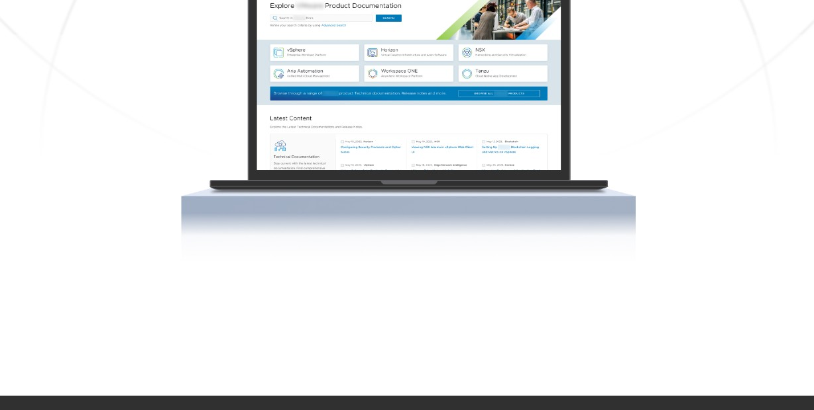
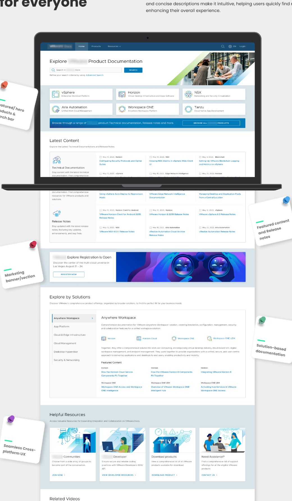
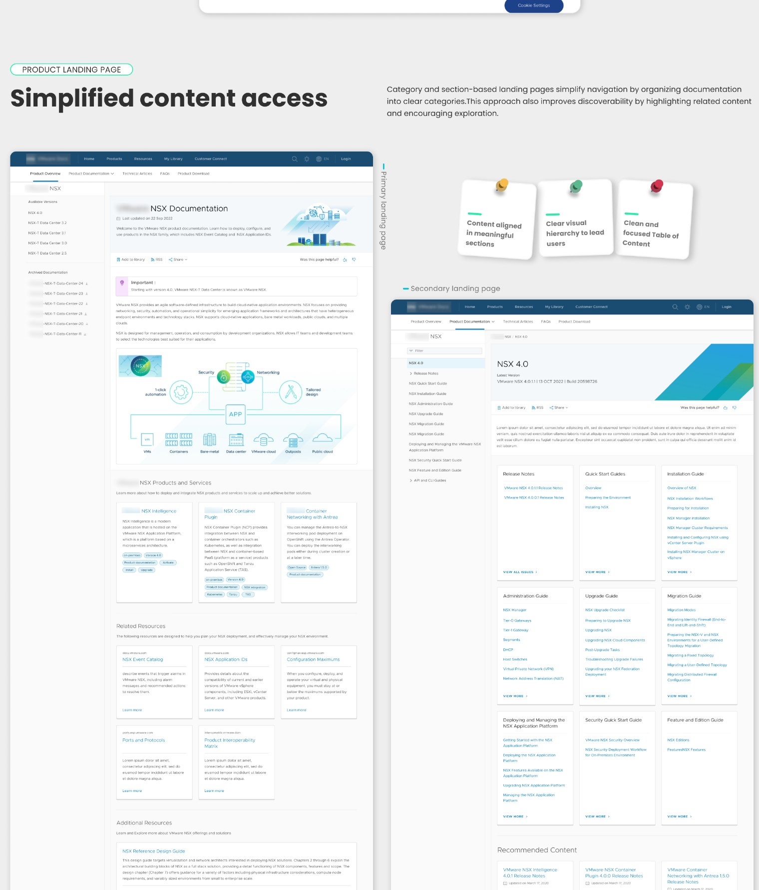
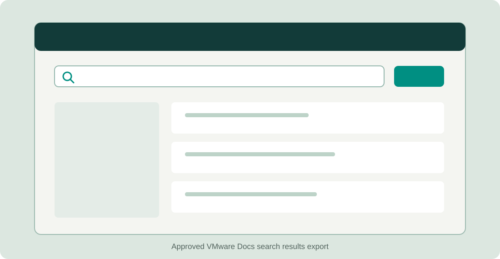
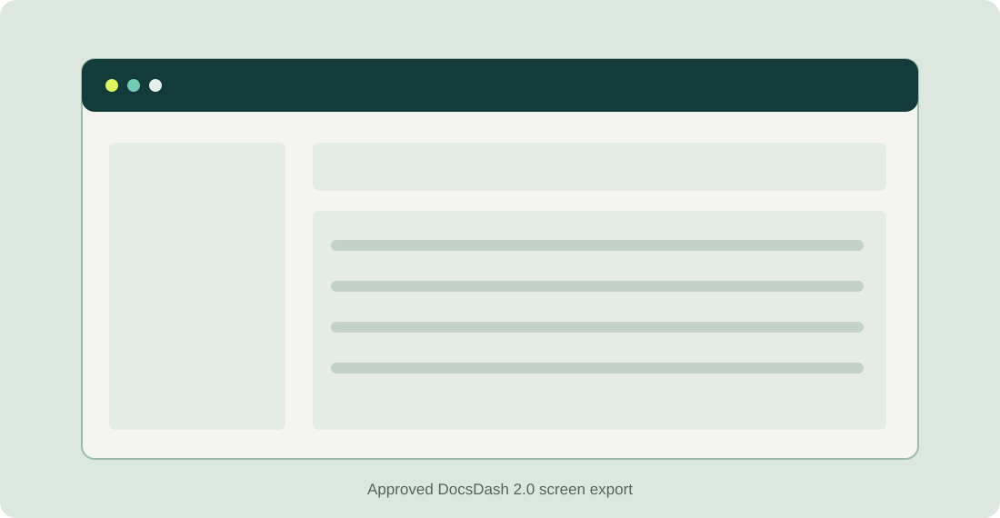

Findability broke down
Search results lacked relevance. Product versions, document types and topics were difficult to distinguish, so people bookmarked pages or used Google instead.
We transformed the way VMware creates, publishes and finds product documentation for a global audience of more than 1.5 million monthly users.

Content Delivery Framework, or CDF, helps technical writers create, manage and deliver product documentation. Docs is the public site where customers read it. DocWorks supports authoring. DocsDash helps teams monitor and publish content.
After years of growth, these experiences no longer worked smoothly together. We had to improve what customers saw while making the underlying publishing work more manageable for internal teams.
Customers struggled with search, unclear navigation and inconsistent content hierarchy. Technical writers moved between tools and manual steps to create, review, translate and publish documentation. These were connected problems: a better public site depended on a better content workflow behind it.
“Many relied on external forums, third-party guides, or contacted support, risking exposure to outdated or incorrect information.”
We combined historical feedback and analytics with user interviews, a customer survey, workshops, competitive analysis, journey mapping, heuristic reviews and an accessibility audit. Over two months, we ran one-hour workshops with internal user groups to map their touchpoints and dependencies.
Search results lacked relevance. Product versions, document types and topics were difficult to distinguish, so people bookmarked pages or used Google instead.
Content planning, reviews, translation and publication depended on scattered tools and repeated follow-ups. Limited visibility made errors harder to resolve.
The older Docs site had keyboard, contrast, labelling and focus issues. Long, dense pages and weak mobile behaviour made the experience harder to use.
We used a double diamond process across Docs, DocWorks and DocsDash. The work moved between immediate improvements and a longer-term vision, with priorities shaped by technical constraints and the acquisition timeline.
Map the content lifecycle, the three portals and the roles behind each handoff. Pair customer feedback with writer workflows, site analytics and accessibility findings.
Turn the research into internal and external personas, problem statements and a shared UX vision. Separate the urgent fixes from the deeper structural changes.
Explore navigation, search, content layouts and publishing workflows in prototypes. Review the tradeoffs with product, engineering and technical writers before committing.
Hand off designs, support development, test with users and refine the experience through feedback. Align the work with Clarity and accessibility standards.
The redesign covered public documentation and the tools that prepare it. These screens show the direction of the customer experience; internal screens in the original case study are masked for confidentiality.
A homepage with clear product entry points, recent content and related resources helps different visitors orient themselves before they search.

Category and section-based landing pages organise documentation into meaningful groups and expose related content without forcing visitors through a long table of contents.

Search concepts paired more relevant results with filters that respond to the visitor’s place in the documentation hierarchy. The approved search screen can replace this slot.

DocsDash 2.0 introduced improved deployment tools, an automated table of contents generator, better localisation support and clearer admin controls. The approved screen export can replace this slot.

The Broadcom acquisition changed priorities and compressed timelines. I had to keep the long-term direction clear while helping the team make practical choices for each release. It made me more confident in explaining design decisions, aligning people across functions and working through ambiguity without losing sight of the user.